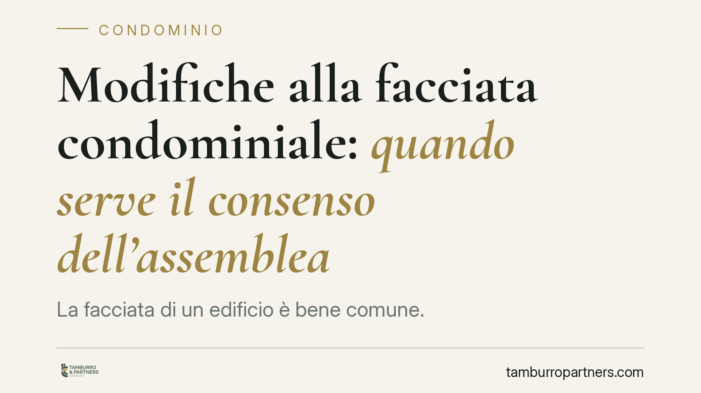

Modifiche alla facciata condominiale: quando serve il consenso dell'assemblea
La facciata di un edificio è bene comune. Una recente pronuncia del TAR Campania torna sul punto: prima di rilasciare un titolo edilizio su interventi che incidono sul prospetto, il Comune dovrebbe verificare il consenso condominiale. La regola varrebbe anche per opere in sanatoria e di ripristino. Vediamo cosa cambia per chi vive o amministra un condominio.

Il caso
La vicenda nasce dal contrasto tra un condominio e la proprietaria di un appartamento al piano terra che aveva ottenuto dal Comune un titolo abilitativo per interventi incidenti sulla facciata dell'edificio. Il condominio ha impugnato l'atto davanti al giudice amministrativo, contestando l'assenza di una delibera assembleare che autorizzasse le opere.
Secondo una recente pronuncia del TAR Campania (Sez. IV), l'amministrazione comunale, prima di rilasciare il titolo, dovrebbe accertare che l'intervento sul prospetto comune sia assistito dal consenso condominiale. In difetto, il titolo è esposto all'annullamento in sede giurisdizionale amministrativa su ricorso al TAR.
Inquadramento normativo
La facciata rientra tra le parti comuni dell'edificio ai sensi dell'art. 1117 c.c., che elenca i beni presuntivamente comuni salvo titolo contrario: tra questi i muri maestri e, con essi, i prospetti che ne costituiscono l'aspetto esterno.
L'uso della cosa comune da parte del singolo condomino è regolato dall'art. 1102 c.c.: ciascuno può servirsene, ma senza alterarne la destinazione e senza impedire agli altri partecipanti di farne pari uso. È qui il limite. Un intervento che modifica l'estetica o la struttura della facciata non è mero "uso" individuale del bene comune: incide sul decoro architettonico dell'edificio, valore tutelato a favore di tutti i condomini.
Quando l'opera si spinge oltre la manutenzione e integra una innovazione — cioè una modifica che altera la destinazione o l'entità della cosa comune — trova applicazione l'art. 1120 c.c., che richiede una delibera assunta con le maggioranze qualificate ivi previste (di regola la maggioranza degli intervenuti e almeno la metà del valore dell'edificio). Diverso il caso della semplice manutenzione o del mero uso individuale non alterativo del prospetto, che non richiede lo stesso quorum. La linea di confine va tracciata caso per caso, guardando all'effetto concreto dell'intervento sulla facciata.
Implicazioni pratiche
Il punto centrale è che la regola non si limiterebbe alle opere nuove. La pronuncia estende la necessità del consenso condominiale anche alle opere in sanatoria e agli interventi di ripristino: anche chi intende regolarizzare un intervento già eseguito, o riportare la facciata a uno stato precedente, dovrebbe muoversi dopo aver acquisito l'assenso dell'assemblea.
È opportuno un chiarimento tecnico. Il titolo edilizio viene comunque rilasciato dal Comune "fatti salvi i diritti dei terzi": significa che l'atto amministrativo non attribuisce al richiedente diritti che non ha sul bene comune. Il condominio che intenda reagire non può limitarsi a contestazioni informali: deve impugnare il titolo davanti al TAR entro 60 giorni dalla piena conoscenza dell'atto. È un termine di decadenza: scaduto, la via del ricorso è preclusa, salvo diversi rimedi in sede civile a tutela della proprietà comune.
Per chi vive in condominio, il messaggio è netto: un intervento sulla facciata deciso da un singolo, per quanto migliorativo o necessario, resta esposto alla contestazione degli altri condomini fino a quando non è coperto da una delibera valida.
Cosa fare in concreto
- Verifica preventiva. Prima di qualsiasi lavoro sul prospetto, accerta se l'intervento è mera manutenzione o costituisce innovazione: da questo dipende il quorum necessario.
- Porta il tema in assemblea. Chiedi l'iscrizione all'ordine del giorno e procurati una delibera espressa, con l'indicazione precisa delle opere autorizzate.
- Conserva la documentazione. Verbale, progetto e relazione tecnica vanno allegati alla pratica edilizia: al Comune serve la prova del consenso.
- Se sei amministratore, monitora i titoli rilasciati su parti comuni: valuta l'impugnazione al TAR entro 60 giorni dalla piena conoscenza dell'atto, previa delibera che autorizzi l'azione.
- In caso di lavori già eseguiti, non dare per scontato che la sanatoria "sistemi tutto": anche il ripristino può richiedere l'assenso assembleare.
Consigliamo di affrontare ogni intervento partendo dalla delibera, non dal cantiere. Il costo di una decisione assembleare corretta è sempre inferiore a quello di un contenzioso.
Disclaimer
Contributo informativo a cura di Tamburro & Partners Avvocati. Non costituisce parere legale.
Ogni condominio ha una storia a sé.
Se gestisci un'amministrazione e vuoi un confronto su una specifica questione condominiale, scrivi allo studio. Ti rispondiamo entro un giorno lavorativo.